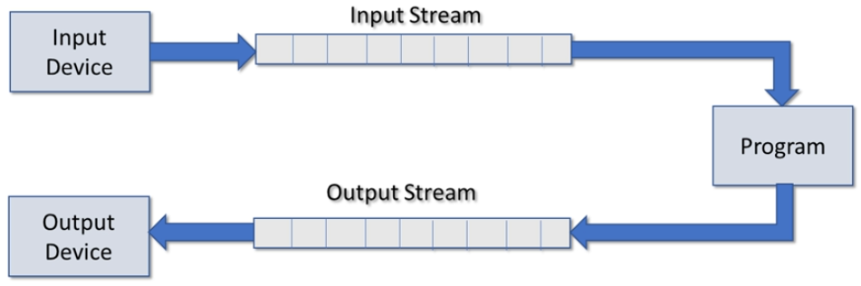

Home | Projects | Notes > C++ Programming > I/O & Streams
Streams and I/O
Stream manipulators
Reading and writing to a text file
Using string streams

C++ uses streams as an interface between the program, and input/output devices.
Independent of the actual device
Sequence of bytes
Input stream provides data to the program
Output stream receives data from the program
| Header File | Description |
|---|---|
iostream | Provides definitions for formatted input and output from/to streams |
fstream | Provides definitions for formatted input and output from/to FILE streams |
iomanip | Provides definitions for manipulators used to format stream I/O |
| Class | Description |
|---|---|
ios | Provides basic support for formatted and unformatted I/O operations (Base class for most other classes) |
ifstream | Provides for high-level input operations on file based streams |
ofstream | Provides for high-level output operations on file based streams |
fstream | Provides for high-level I/O operations on file based streams (Derived from ofstream and ifstream) |
stringstream | Provides for high-level I/O operations on memory based strings (Derived from istringstream and ostringstream) |
Global objects - Initialized before main executes
Best practice is to use cerr for error messages and clog for log messages.
| Object | Description |
|---|---|
cin | Standard input stream - by default 'connected' to the standard input device (i.e., keyboard). Instance of istream. |
cout | Standard output stream - by default 'connected' to the standard input device (i.e., console). Instance of ostream. |
cerr | Standard error stream - by default 'connected' to the standard error device (i.e., console). Instance of ostream (unbuffered). |
clog | Standard error stream - by default 'connected' to the standard log device (i.e., console). Instance of ostream (unbuffered). |
Streams have useful member functions to control formatting.
Can be used on input and output streams
The time of the effect on the stream varies
Can be used as member functions or as a manipulator
xxxxxxxxxx21std::cout.width(10); // Member function2std::cout << std::setw(10); // ManipulatorHere, we'll focus on 'manipulator' usage.
Common Stream Manipulators
Boolean
boolalpha, noboolalpha
Integer
dec, hex, oct, showbase, noshowbase, showpos, noshowpos, uppercase, nouppercase
Floating point
fixed, scientific, setprecision, showpoint, noshowpoint, showpos, noshowpos
Field width, justification and fill
setw, left, right, internal, setfill
Others
endl, flush, skipws, noskipws, ws
Used to format boolean types
Default when displaying boolean values is 1 or 0
Sometimes the string true or false are more appropriate
Formatting boolean types
xxxxxxxxxx21std::cout << (10 == 10) << std::endl; // 12std::cout << (10 == 20) << std::endl; // 0xxxxxxxxxx21std::cout << std::noboolalpha; // 1 or 02std::cout << std::boolalpha; // true or faseAll further boolean output will be affected.
Method version
xxxxxxxxxx21std::cout.setf(std::ios::boolalpha);2std::cout.setf(std::ios::noboolalpha);Reset to default
xxxxxxxxxx11std::cout << std::resetiosflags(std::ios::boolalpha);Default when displaying integer value is:
dec (base 10)
noshowbase - prefix used to show hexadecimal or octal
nouppercase - when displaying a prefix and hex values it will be lower case
noshowpos - no + is displayed for positive numbers
These manipulators affect all further output to the stream.
Setting base
xxxxxxxxxx51int num{255};2
3std::cout << std::dec << num << std::endl; // 2554std::cout << std::hex << num << std::endl; // ff5std::cout << std::oct << num << std::endl; // 377Showing the base
xxxxxxxxxx61int num{255};2
3std::cout << std::showbase; // std::noshowbase4std::cout << std::dec << num << std::endl; // 2555std::cout << std::hex << num << std::endl; // 0xff ('0x' prefix for hexadecimal)6std::cout << std::oct << num << std::endl; // 0377 ('0' prefix for octal)Displaying hex in uppercase
xxxxxxxxxx41int num{255};2
3std::cout << std::showbase << std::uppercase; // std::nouppercase4std::cout << std::hex << num << std::endl; // 0XFF (note capitalized 'XFF')Displaying the positive sign
xxxxxxxxxx101int num1{255};2int num2{-255};3
4std::cout << num1 << std::endl; // 2555std::cout << num2 << std::endl; // -2556
7std::cout << std::showpos; // std::noshowpos8
9std::cout << num1 << std::endl; // +25510std::cout << num2 << std::endl; // -255Setting and resetting integer types
Set using setf
xxxxxxxxxx31std::cout.setf(std::ios::showbase);2std::cout.setf(std::ios::uppercase);3std::cout.setf(std::ios::showpos);Reset to defaults
xxxxxxxxxx41std::cout << std::resetiosflags(std::ios::basefield);2std::cout << std::resetiosflags(std::ios::showbase);3std::cout << std::resetiosflags(std::ios::showpos);4std::cout << std::resetiosflags(std::ios::uppercase);Default when displaying floating point value is:
setprecision - number of digits displayed (6)
fixed - not fixed to a specific number of digits after the decimal point
noshowpoint - trailing zeros that are not displayed
nouppercase - when displaying in scientific notation
noshowpos - no + is displayed for positive numbers
These manipulators affect all further output to the stream.
Precision
xxxxxxxxxx21double num{1234.5678};2std::cout << num << std::endl; // 1234.57 (Notice precision is 6 and rounding)xxxxxxxxxx21double num{123456789.987654321};2std::cout << num << std::endl; // 1.23457e+008 (Notice precision is 6)xxxxxxxxxx31double num{123456789.987654321};2std::cout << std::setprecision(9);3std::cout << num << std::endl; // 123456790 (Note that rounding occurs)Fixed
xxxxxxxxxx31double num{123456789.987654321};2std::cout << std::fixed;3std::cout << num << std::endl; // 123456789.987654 (Precision 6 from the decimal)xxxxxxxxxx31double num{123456789.987654321};2std::cout << std::setprecision(3) << std::fixed;3std::cout << num << std::endl; // 123456789.988 (Precision 3 from the decimal)Note that rounding occurs.
Scientific
xxxxxxxxxx31double num{123456789.987654321};2std::cout << std::setprecision(3) << std::scientific;3std::cout << num << std::endl; // 1.23e+008 (Precision 3)Scientific uppercase
xxxxxxxxxx31double num{123456789.987654321};2std::cout << std::setprecision(3) << std::scientific << std::uppercase;3std::cout << num << std::endl; // 1.23E+008 (Note the capital 'E')Displaying the positive sign
xxxxxxxxxx31double num{123456789.987654321};2std::cout << std::setprecision(3) << std::fixed << std::showpos;3std::cout << num << std::endl; // +123456789.988 (Note the leading '+')Trailing zeros
xxxxxxxxxx51double num{12.34};2std::cout << num << std::endl; // 12.34 (Note no trailing zeros - default)3std::cout << std::showpoint;4std::cout << std::endl; // 12.3400 (Note trailing zeros up to precision)5
Returning to general settings
unsetf
xxxxxxxxxx11std::cout.unsetf(std::ios::scientific | std::ios::fixed);or
xxxxxxxxxx11std::cout << std::resetiosflags(std::ios::floatfield);Refer to the docs for other set/reset flags!
Default when displaying floating point value is:
setw - not set by default
left - when no field width, right - when using field width
setfill - not set by default (blank space is used by default)
Some of these manipulators affect only the next data element put on the stream.
Defaults
xxxxxxxxxx51double num{1234.5678};2std::string hello{"Hello"};3std::cout << num << hello << std::endl; // 1234.57Hello4std::cout << num << std::endl; // 1234.575std::cout << hello << std::endl; // HelloField width (setw)
xxxxxxxxxx51double num{1234.5678};2std::string hello{"Hello"};3
4std::cout << std::setw(10) << num << hello << std::endl;5// ---1234.57Hello ('-' represents space)xxxxxxxxxx71double num{1234.5678};2std::string hello{"Hello"};3
4std::cout << std::setw(10) << num 5 << std::setw(10) << hello6 << std::setw(10) << hello << std::endl; 7// ---1234.57-----Hello-----Hello ('-' represents space)xxxxxxxxxx81double num{1234.5678};2std::string hello{"Hello"};3
4std::cout << std::setw(10)5 << std::left6 << num // Only affects num!7 << hello << std::endl; 8// 1234.57---Hello ('-' represents space)xxxxxxxxxx81double num{1234.5678};2std::string hello{"Hello"};3
4std::cout << std::setw(10) << num 5 << std::setw(10) << std::right << hello6 << std::setw(15) << std::right << hello7 << std::endl; 8// ---1234.57-----Hello----------Hello ('-' represents space)Filling fixed width (setfill)
xxxxxxxxxx81double num{1234.5678};2std::string hello{"Hello"};3
4std::cout << std::setfill('*');5std::cout << std::setw(10)6 << num7 << hello << std::endl; 8// ***1234.57Hello
fstream and ifstream)fstream and ifstream are commonly used for input files
#include <fstream>
Declare an fstream or ifstream object
Connect it to a file on your file system (opens it for reading)
Read data from the file via the stream
Close the stream
Opening a file for reading with fstream
xxxxxxxxxx11std::fstream in_file{"../myfile.txt", std::ios::in};Opening for reading in binary mode
xxxxxxxxxx11std::fstream in_file{"../myfile.txt", std::ios::in | std::ios::binary};Opening a file for reading with ifstream
xxxxxxxxxx21std::ifstream in_file{"../myfile.txt", std::ios::in};2std::ifstream in_file{"../myfile.txt"};Open for reading in binary mode
xxxxxxxxxx11std::ifstream in_file{"../myfile.txt", std::ios::binary};Opening a file for reading with open()
xxxxxxxxxx71std::ifstream in_file;2std::string filename;3std::cin >> filename; // Get the file name4
5in_file.open(filename);6// Or7in_file.open(filename, std::ios::binary);Check if file opened successfully (is_open())
xxxxxxxxxx101if (in_file.is_open()) // Or simply 'if (in_file)' to test the stream object2{3 // Read from it4}5else6{7 // File could not be opened8 // Does it exist?9 // Should the program terminate?10}Closing a file
Always close any open files to flush out any unwritten data!
xxxxxxxxxx11in_file.close();Reading from files using >>
We can use the extraction operator for formatted read the same way we used it with cin.
xxxxxxxxxx61int num{};2double total{};3std::string name{};4
5in_file >> num; // num <- 1006in_file >> total >> name; // total <- 176.64, name <- "Jack"Where the contents of in_file is
xxxxxxxxxx311002176.643JackReading from files using getline()
We can use getline() to read the file one line at a time.
xxxxxxxxxx21std::string line{};2std::getline(in_file, line); // line <- "This is a line"Where the contents of in_file is
xxxxxxxxxx11This is a lineReading a text file one line at a time
xxxxxxxxxx191// Open file2std::ifstream in_file{"../myfile.txt"};3std::string line{};4
5// Check if the file is open6if (!in_file)7{8 std::cerr << "File open error" << std::endl;9 return 1; // Exit the program (main)10}11
12while (!in_file.eof()) // While not at the end13{14 std::getline(in_file, line); // Read a line15 std::cout << line << std::endl; // Display the line16}17
18// Close the file19in_file.close();The while loop in the example above can be re-written as
xxxxxxxxxx21while (std::getline(int_file, line)) // While not at the end read a line2 std::cout << line << std::endl;Reading text file one character at a time (get())
xxxxxxxxxx181// Open file2std::ifstream in_file{"../myfile.txt"};3char c;4
5// Check if the file is open6if (!in_file)7{8 std::cerr << "File open error" << std::endl;9 return 1; // Exit the program (main)10}11
12while (!in_file.get(c)) // While not at the end read a character13{14 std::cout << c; // Display the character15}16
17// Close the file18in_file.close();
fstream and ofstream)fstream and ofstream are commonly used for output files
#include <fstream>
Declare an fstream or ofstream object
Connect it to a file on your file system (opens it for writing)
Write data to the file via the stream
Close the stream
Note
Output files will be created if they don't exist.
Output files will be overwritten (truncated) by default.
Can be opened so that new writes append.
Can be open in text or binary modes.
Opening a file for writing with fstream
xxxxxxxxxx11std::fstream out_file{"../myfile.txt", std::ios::out};Opening for writing in binary mode
xxxxxxxxxx11std::fstream out_file{"../myfile.txt", std::ios::out | std::ios::binary};Opening a file for writing with ofstream
xxxxxxxxxx21std::ofstream out_file{"../myfile.txt", std::ios::out};2std::ofstream out_file{"../myfile.txt"};Open for writing in binary mode
xxxxxxxxxx11std::ofstream out_file{"../myfile.txt", std::ios::binary};Different actions upon opening a file for writing
xxxxxxxxxx61// Truncate (discard contents) when opening2std::ofstream out_file{"../myfile.txt", std::ios::trunc};3// Append on each write4std::ofstream out_file{"../myfile.txt", std::ios::app};5// Seek to end of stream when opening6std::ofstream out_file{"../myfile.txt", std::ios::ate};Opening a file for writing with open()
xxxxxxxxxx71std::ofstream out_file;2std::string filename;3std::cin >> filename; // Get the file name4
5out_file.open(filename);6// Or7out_file.open(filename, std::ios::binary);Check if file opened successfully (is_open())
xxxxxxxxxx101if (out_file.is_open()) // Or simply 'if (out_file)' to test the stream object2{3 // Write to it4}5else6{7 // File could not be opened or created8 // Does it exist?9 // Should the program terminate?10}Closing a file
Always close any open files to flush out any unwritten data!
xxxxxxxxxx11out_file.close();Writing to files using <<
We can use the insertion operator for formatted write the same way we used it with cout.
xxxxxxxxxx71int num{100};2double total{176.64};3std::string name{"Jack"};4
5out_file << num << "\n"6 << total << "\n"7 << name << std::endl;The contents of in_file will be
xxxxxxxxxx311002176.643JackCopying a text file one line at a time
xxxxxxxxxx261// Open files2std::ifstream in_file{"../myfile.txt"};3std::ofstream out_file{"../copy.txt"};4
5// Check if the input file is open6if (!in_file)7{8 std::cerr << "File open error" << std::endl;9 return 1; // Exit the program (main)10}11
12// Check if the output file is open13if (!out_file)14{15 std::cerr << "File create error" << std::endl;16 return 1; // Exit the program (main)17}18
19std::string line{};20
21while (std::getline(int_file, line)) // While not at the end read a line22 out_file << line << std::endl; // Write a line to the output file23
24// Close the files25in_file.close();26out_file.close();Copying a text file one character at a time (get()/put())
xxxxxxxxxx281// Open files2std::ifstream in_file{"../myfile.txt"};3std::ofstream out_file{"../copy.txt"};4
5// Check if the input file is open6if (!in_file)7{8 std::cerr << "File open error" << std::endl;9 return 1; // Exit the program (main)10}11
12// Check if the output file is open13if (!out_file)14{15 std::cerr << "File create error" << std::endl;16 return 1; // Exit the program (main)17}18
19char c;20
21while (!in_file.get(c)) // While not at the end read a character22{23 out_file.put(c); // Write the character to the file24}25
26// Close the files27in_file.close();28out_file.close();
Allow us to read or write from strings in memory much as we would read/write to files
Very powerful
Very useful for data validation
Using string streams
#include <sstream>
Declare an stringstream, istringstream, or ostringstream object
Connect it to a std::string
Read/write data from/to the string stream using formatted I/O
Reading from a stringstream
xxxxxxxxxx91
3int num{};4double total{};5std::string name{};6std::string info{"Moe 100 1234.5"};7
8std::istringstream iss{info};9iss >> name >> num >> total;Writing to a stringstream
xxxxxxxxxx91
3int num{100};4double total{1234.5};5std::string name{"Moe"};6
7std::ostringstream oss{};8oss << name << " " << num << " " << total;9std::cout << oss.str() << std::endl;Validating input with stringstream
xxxxxxxxxx111int value{};2std::string input{};3
4std::cout << "Enter an integer: ";5std::cin >> input;6
7std::stringstream ss{input};8if (ss >> value)9 std::cout << "An integer was entered";10else11 std::cout << "An integer was NOT entered";